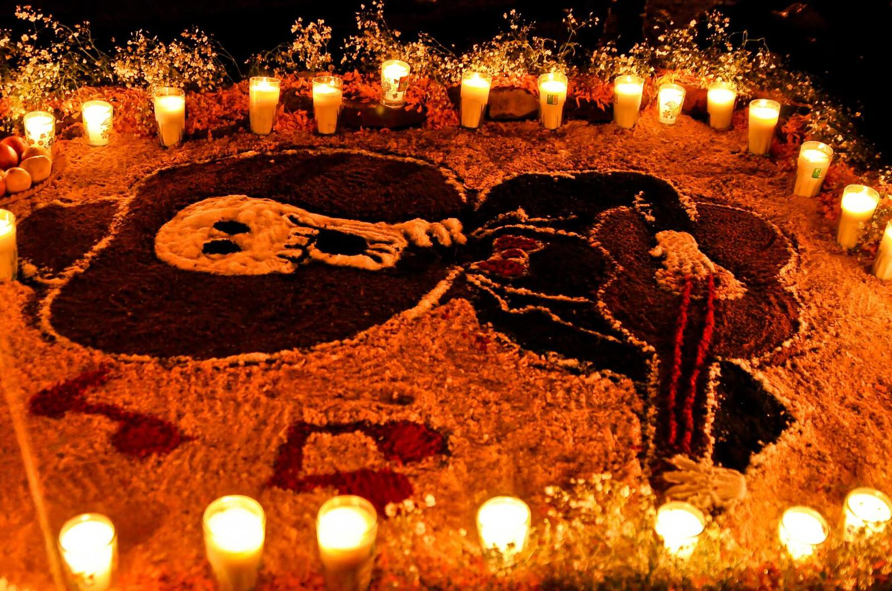
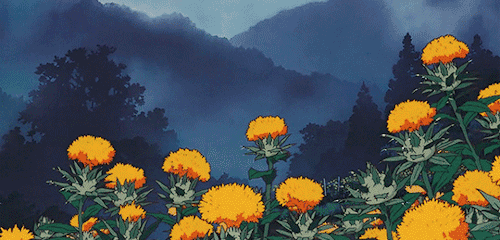
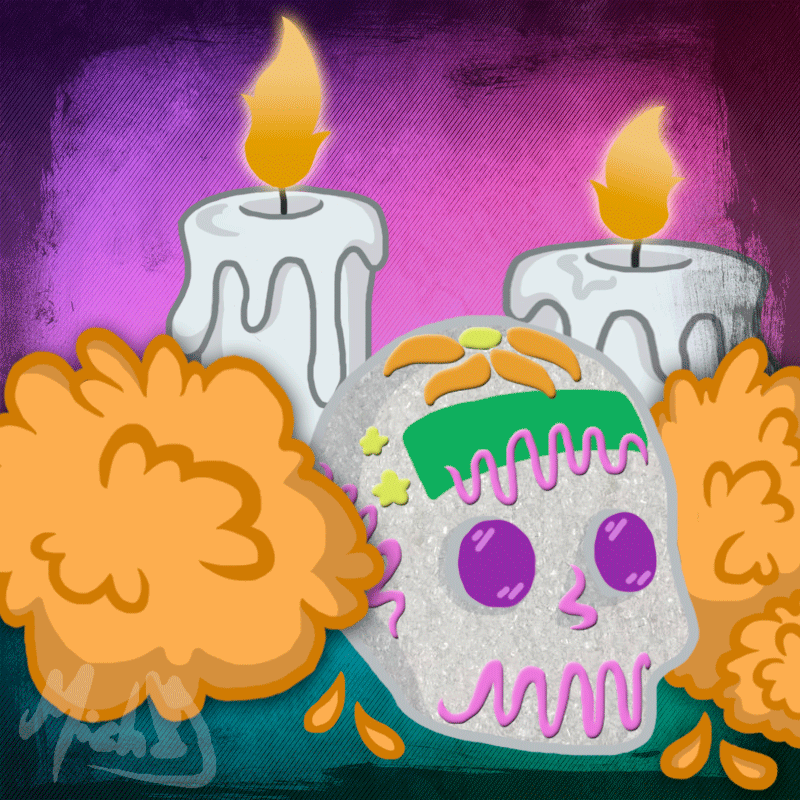
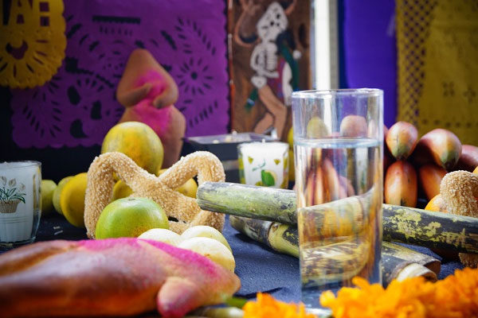
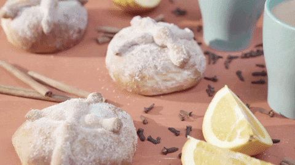
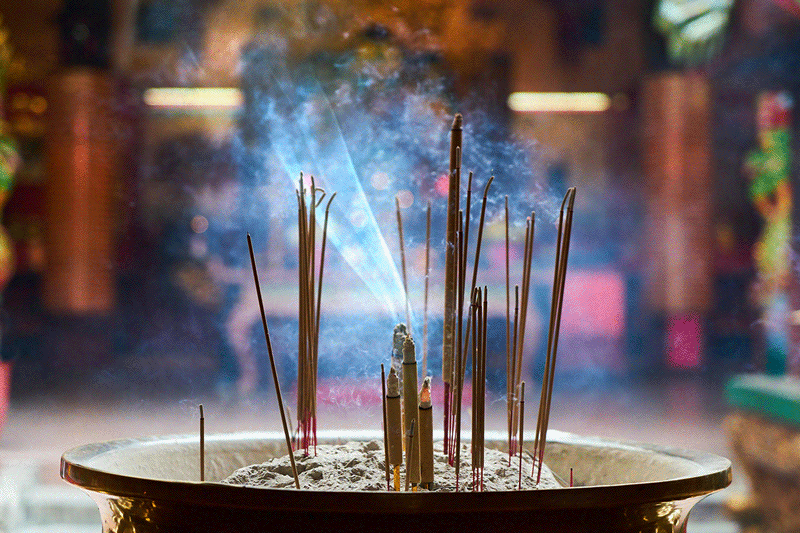
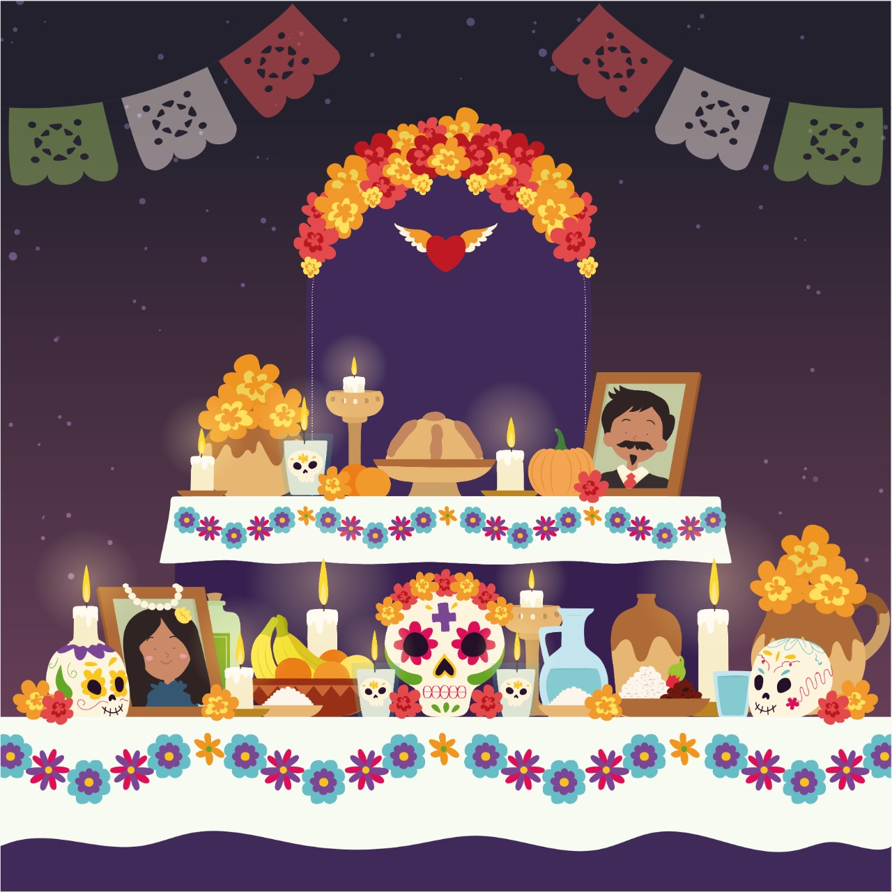
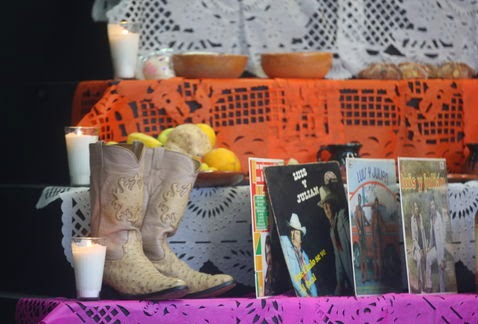

Historia del Dia de Muertos
El Día de Muertos tiene sus raíces en las antiguas civilizaciones mesoamericanas, como los aztecas, mayas, purépechas y otros pueblos indígenas. Para estas culturas, la muerte no era vista como el final de la vida, sino como una continuación del ciclo vital. Se creía que los espíritus de los difuntos regresaban a la Tierra durante ciertos períodos del año, permitiendo que sus familias los honraran y celebraran su memoria.
Aztecas: Los aztecas tenían una visión compleja del más allá y un profundo respeto por sus ancestros. Creían que los muertos viajaban a un inframundo llamado Mictlán, y realizaban ceremonias y ofrendas para facilitar este viaje.
Ofrendas: Las ofrendas se construían en los altares familiares y estaban decoradas con alimentos, flores, calaveras y otros elementos significativos. Las flores de cempasúchil, con su color amarillo brillante, eran usadas para guiar a las almas con su aroma.

Origen
El Día de Muertos tiene sus raíces en las antiguas culturas mesoamericanas, como los aztecas, mayas, purépechas y toltecas, que creían en la vida después de la muerte. Antes de la llegada de los españoles y la introducción del catolicismo en América Latina, estas culturas celebraban festivales dedicados a los muertos en diferentes momentos del año.
Con la colonización española, las creencias y prácticas indígenas fueron reprimidas con el objetivo de cristianizar la cultura americana. Sin embargo, se dio un proceso conocido como sincretismo, en el que las poblaciones nativas resignificaron las enseñanzas a partir de su comprensión sobre el mundo, los dioses y la naturaleza.
Fuente: https://concepto.de/dia-de-muertos/#ixzz8phNcvg1Z

Altares de Muertos
El altar de muertos y su ofrenda es el ritual más importante de las tradiciones de Día de Muertos en México, pues además de ser literalmente, la muestra de amor más grande de esta celebración, es uno de los rituales más exquisitos en todos sus elementos, tanto en sus decoraciones y los significados de estos, como en sus increíbles aromas y deliciosos sabores de temporada

Simbolismo del Día de Muertos

Flores de Cempasúchil
De color naranja intenso, guían a las almas de los difuntos hacia el altar gracias a su aroma y color vibrante. Esta flor es conocida como la “flor de los muertos” y simboliza la fragilidad de la vida.

Velas y veladoras
Representan la luz que guía a los difuntos de regreso al mundo de los vivos. La cantidad de velas varía, dependiendo de las almas a las que se dedique el altar, y su ubicación a menudo indica el camino de los difuntos.

Agua
Es un elemento esencial que simboliza la pureza y ayuda a calmar la sed de los espíritus tras su largo viaje desde el más allá. Representa, además, la vida y el renacimiento.

Pan de Muerto
Representa el ciclo de la vida y la muerte. Este pan tiene forma redonda para recordar el ciclo de la vida, y sus decoraciones en forma de huesos simbolizan la muerte. Al colocarlo en el altar, se da a los espíritus el alimento necesario para su viaje.

Incienso o copal
Su humo perfuma el ambiente y guía a las almas hacia el altar. En tiempos antiguos, el copal era una ofrenda sagrada para los dioses, y su uso en el Día de Muertos es una conexión con las creencias prehispánicas.

Comida y bebida favoritas del difunto:
En cada altar, se colocan los platillos, frutas o bebidas favoritas de los difuntos, para que puedan disfrutarlas al regresar. Estos alimentos representan la hospitalidad y el cariño de la familia hacia sus seres queridos.

Objetos personales del difunto:
A veces se añaden elementos que le pertenecían al fallecido, como fotografías o artículos personales, que sirven para traer su memoria a la celebración y recordarlo tal como era en vida.
Ver más